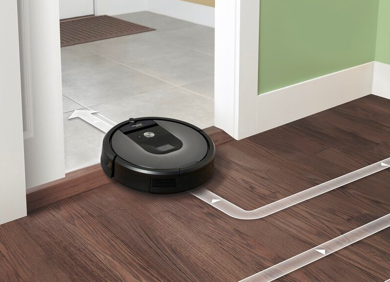

Mobile robot control
and Tele-operation with ROS

Skills and Tools Used
| ROS (Robot Operating System) | C++ | Linux |
Summary
Robot Operating System (ROS) is a powerful software tool to control robots. This project uses ROS to create a software package that can control an iRobot to complete a set of tasks as noted below.
- Move freely in the given indoor environment.
- Using the left and right bump sensors, turn around when it touches an obstacle.
- Turn around when an external switch is pressed.
- Respond to joystick input for manual control.
- Do a celebration ceremony motion triggered by one of the joystick buttons.
Some of the ROS Packages and Libraries Used
- create_autonomy: This is a package that contains the necessary drivers for the iRobot. This driver contains the geometry_msgs/Twist subscriber that controls the robot's wheels according to a forward and angular velocity.
- joy: The joy library contains a node called "joy_node". This node publishes a message with the current state of the joystick's buttons and axes.